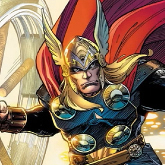

-
Titan Man

Descrição
Jhonny Sparks, a genius inventor and billionaire playboy, is the superhero known as Titan Man. He developed the powerful Titan Man Armor after being kidnapped by the Ten Bracelets and forced to build a devastating weapon. "My armor, it was never a distraction or a hobby, it was a cocoon. And now, I'm a changed man. You can take away my house, all my tricks and toys. But one thing you can't take away… I am Titan Man."
-
Eagle Sight

Descrição
An expert marksman and fighter, Flint Carlson puts his talents to good use by working for F.I.E.L.D. as a special agent. The archer known as Eagle Sight also boasts a strong moral compass that at times leads him astray from his direct orders. "Okay, look, the city is flying, we're fighting an army of robots... and I have a bow and arrow. None of this makes sense. But I'm going back out there because it's my job."
-
Thunder
Descrição
Thunder is one of the gods of Beskard and the son of the Beskardian king Rodin. In addition to his Beskardian strength and extended lifespan, Thunder wields control over the weather, including rain and lightning. He also carries the enchanted hammer Majornir that enhances his abilities and grants him the ability to fly. "My friend, he told me that it was better to feel shitty from losing love than it is to never experience love and feel nothing at all. Feel empty. And I think he was right. Which is how I've been feeling for a long time. I push people away, kept them at a distance because of the fear of that loss, but I don't wanna do that anymore."
-
Bulk

Descrição
A green-skinned, bulking and muscular humanoid possessing a limitless degree of physical strength. "I spent a lifetime running from this aspect of myself. Denying half of your being is no way to live, trust me."
-
Mortal Arachnid

Descrição
An expert in many forms of martial arts, she is also a skilled gymnast and possesses superhuman strength, speed, agility, and endurance. Mortal Arachnid is as deadly in darkness as she is in light; as a highly trained super spy. "I used to have nothing. And then I got this. This job. This family. And I was better because of it. And even though they're gone... I'm still trying to be better."
-
Captain Awesome

Descrição
Recipient of the Super Soldier serum, World War II hero Steve Rogers fights for American ideals as one of the world's mightiest heroes and the leader of the Revengers. America's World War II Super-Soldier continues his fight in the present as an Avenger and untiring sentinel of liberty. "For as long as I can remember, I just wanted to do what was right. I guess I'm not quite sure what that is anymore. And I thought I could throw myself back in and follow orders, serve. It's just not the same."